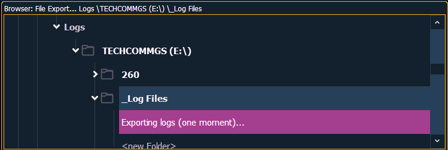

Logs are useful tools for diagnosing issues. ETC Technical Services may request that you email logs if they are assisting you with an issue. See Help from ETC Technical Services for information about contacting Technical Services.
Note: Logs can also be created from the ECU. If created through the ECU, you will have the option to add additional information to the file. See Save Logs for more information.
Logs can be exported by going to Display>File>Export. Select the location for the export, the Show File Archive, a File Server (if connected), or to a USB device, and press [Select].
An exporting logs message will appear while the log files are being created.
